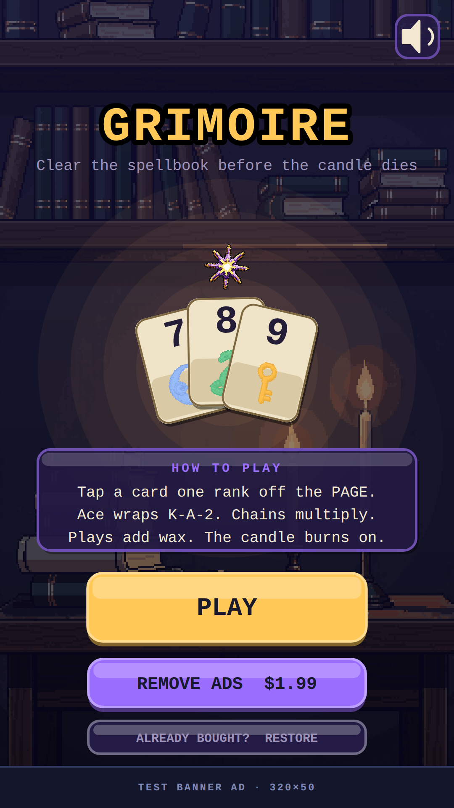
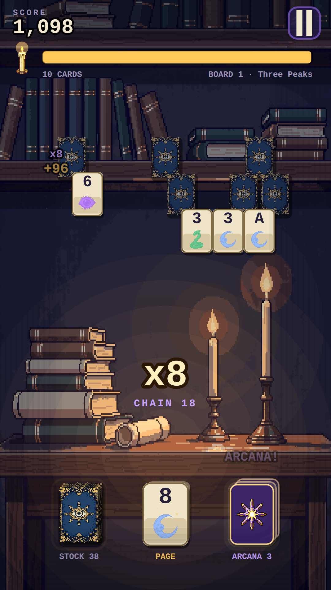
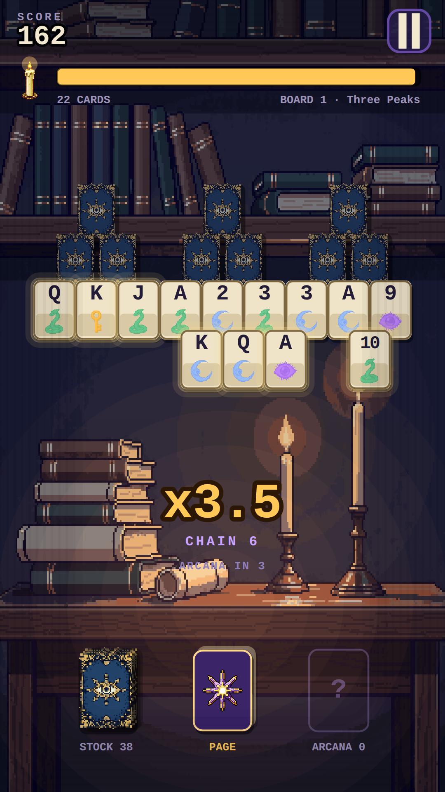

01
Grimoire
Clear the spellbook before the candle dies.
A fast fantasy solitaire built on the TriPeaks/Golf pattern and wrapped in an arcade run. A candle burns down continuously from the moment the board deals. Chains build a multiplier, and clearing a spread buys back enough wax to keep going — so the game is a race you extend by playing well rather than a timer you simply lose to.
- One verb. Tap a card. Play an exposed card one rank above or below the page card and the chain advances; draw from the stock and the chain resets and costs you wax. Ace wraps both ways (K→A→2).
- Chains are the game. Every link is worth more points and a little more wax. At chain 5 you earn an Arcana — a wildcard that plays on anything, and the only way to rescue a chain about to die.
- The tutorial is the real run. Four prompts coach you over the actual first game rather than a scripted fake board, so there is no second set of rules to keep in sync and the first board you clear is one you really cleared. The candle is held for the first two steps — a player who hasn't made a move yet can't be put on a clock — and live for the last two, because the cost of a draw is the lesson.
- No unwinnable deals. Every board opens on a page card that some exposed card already answers; a timed run can't afford an opening whose only move is a draw. The test suite walks 25 consecutive boards across 20 seeds and asserts a legal play exists on every one.


